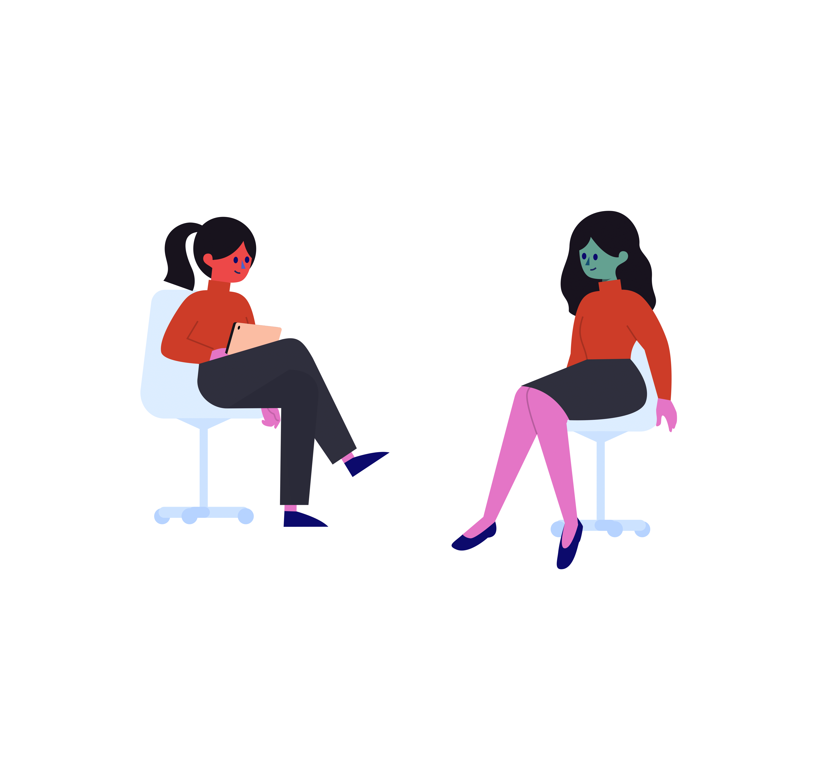
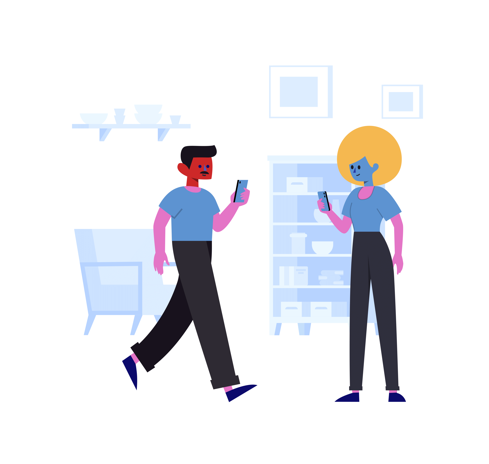
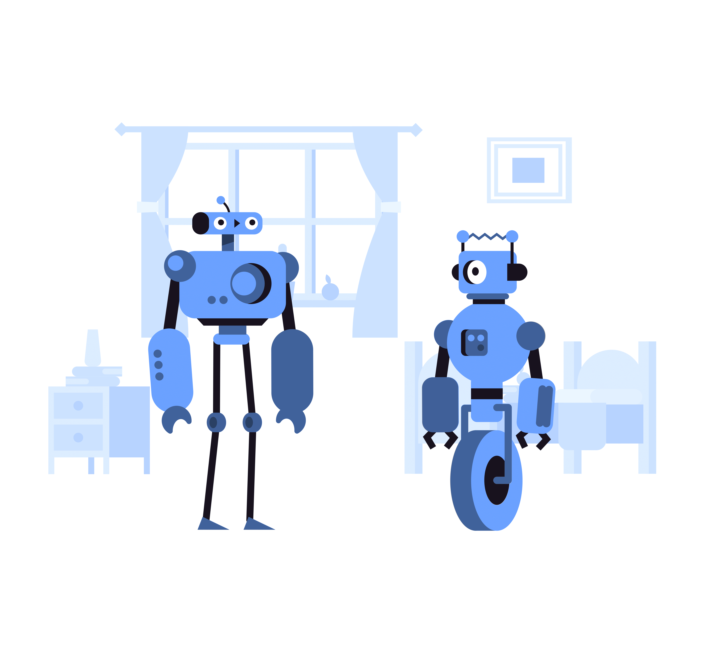

Hi 👋 I'm Allison
1st-Year Computer Science Student
I made this website as part of my web development course. It's still in progress. I'm planning to learn more about site nagivation, JavaScript, responsive frameworks like React.js, and more!
Come back later to see my progress!
Featured Projects
More information and projects can be found at github.com/an026.

EAR | Hanced
A speech-to-text website with a simple and intuitive design for those hard of hearing. This project was a collaborative effort with a friend at our first hackathon.
View project!
TODO List
This project is a "to do" list that explores the implementation of a back-end and database for a website. You can add entries, check them off, or delete them!
View project!
Conway's Life Game
My first personal project is a reproduction of the famous 70's game Conway's Life that uses mathematics to simulate population growth and decay.
View project!